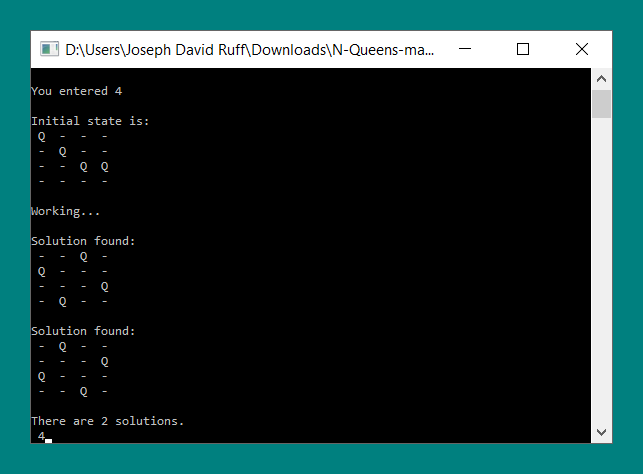
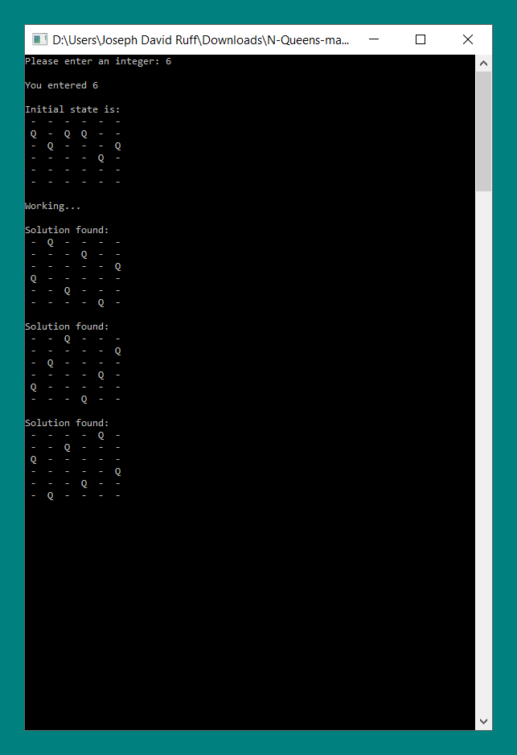

N Queens Problem
Program written in Python 2 for solving the N Queens problem using a brute force aproach

Contents
Intro
The 8 Queens Problem
The eight queens puzzle is the problem of placing eight chess queens on an 8×8 chessboard so that no two queens threaten each other; thus, a solution requires that no two queens share the same row, column, or diagonal.
The n Queens Problem
The eight queens puzzle is an example of the more general n queens problem of placing n queens on an n×n chessboard, for which solutions exist for all natural numbers n with the exception of n = 2 and n = 3.
The Solution
My solution takes an input n, and then proceeds to use a brute force solution to find every possible board set up. When it finds a valid solution it prints it, and then proceeds to continue to attempt to find all other possible solutions.
Test cases
Lower numbers
Case: 0 < n < 4
For inputs 1 through 3, there are no valid solutions to the N Queens problem. This program produces the following outputs when n is between 1 and 3.
4 Queens
Case: n = 4
For an input of 4, there are only 2 solutions. This program produces the following output when n is equal to 4.
5 Queens
Case: n = 5
An input of 5 has 10 possible solutions. This program produces the following output when n is equal to 5.
6 and above
Case: n > 5
For all input greater than or equal to 6, the program runs very slowly due to the time complexity of the algorithm used. It will continue to run until interrupted, outputting any valid solution that it finds.
Possible Improvements
Change child generation method
At the moment every time the program generates a board state, it doesn't consider the potential rotations of that board state. The program could be improved by considering rotations of a given board state, when generating it's child state.
Consider board state storage method
At the moment a given board state is stored as a list of n numbers, between 0 and n - 1, where each index in the list represents a column of the board, and the value at that index indicates the position of the queen in that column.
This method works as we do not need to consider the possibility of 2 queens in the same column.
We can improve this further, by requiring that every number in the list be unique. This works, because 2 of the same number in the array indicates 2 queens being in the same row, which is not allowed. This will eliminate a large amount incorrect board states, from ever being considered.
Different Programming Language
Using a compiled programming language rather than an interpreted one like Python, could improve the speed greatly.